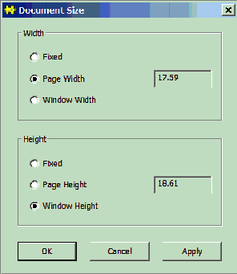
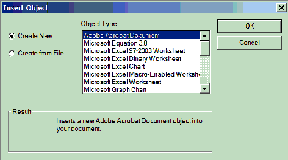
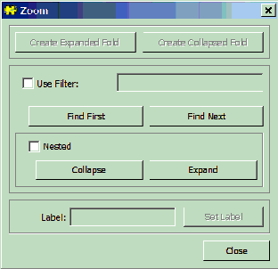

Tools Menu
General properties
The commands in this menu provide various miscelaneous tools.
Document Size

Insert OLE Object
This command opens a modal dialog box allowing an OLE object to be inserted into a document at the caret position.

This command inserts a header into the document which becomes visible when the document is printed.
Insert Create Link
This command turns the highlighted text into a hyper text link if possible. The highlighted text must have a form like <Dialog.Bleep>
Bleep<> which gives the following link .
Typical links are
<StdLinks.ShowTarget('Contents')>
top<>
<StdCmds.OpenBrowser('Manuals/ToolsMenu', 'Tools Menu')>
Tools Menu<>
If the 'Show Marks' command from the Edit menu is choosen links show up as angled hollow arrows.To return the link into text form hold the control key down and click into one of these arrows.
Create Target
This command turns the highlighted text into a target that can be jumped to. The highlighted text should have a form like <ExpandAll>Expand All<>.
If the 'Show Marks' command from the Edit menu is choosen links show up as hollow circles.To return the target into text form hold the control key down and click into one of these circles.
Create Fold
This command turns the highlighted text into a fold enclosed between two arrows containg a minus signs. Clicking on either of the arrows will close the fold (the arrows now contain a plus sign), the caret is then placed between the arrows and text can be typed into the closed fold. Clicking on an arrow will open the fold again.
Expand All
This command opens all the closed folds in the document.
Collapse All
This command closes all the open folds in the document.
Fold...

Encode Document
This command encodes a document into ascii characters. The encoded version of the document is opened in a new window. The encoded document can be sent by email.
Encode Selection
This command encodes a highlighted section of a document into ascii characters. The encoded section of the document is opened in a new window.
Encode File...
This command encodes a file into ascii characters. The encoded version of the file is opened in a new window. A standard file open dialig pops up for choosing which file to encode
Encode File List
This command encodes a list of files into a document containg only ascii charcters. The document is opened in a new window. The list of files to be enco´ded must be highlighted in the document in the top window.
Decode
This command decodes an encoded document, file or list of files.
About Encoded Material
This command gives information about what is encoded.